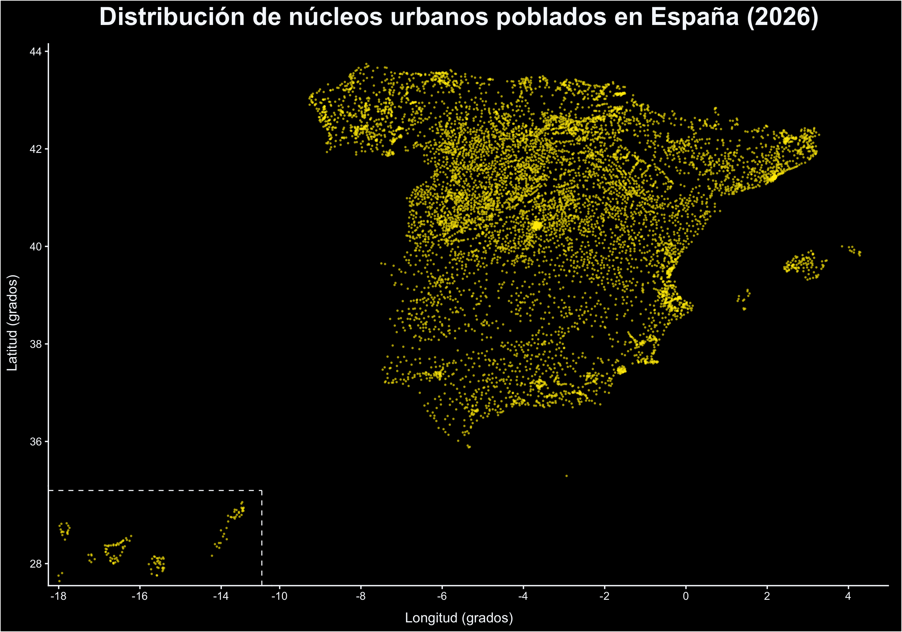

Territorio / Jerarquías / Conexiones
Visualización de datos
Tres miradas a los datos: dónde se asienta la población, cómo se organiza una familia de mariposas y qué conexiones dibuja el comercio europeo.
Núcleos poblados de España
La distribución de ciudades, pueblos o núcleos urbanos con población registrada, permite reconocer concentraciones y vacíos en el territorio. Cada punto representa una localidad, no su número de habitantes.

Conexiones del comercio europeo
Un diagrama de cuerdas presenta las relaciones comerciales entre países europeos. Las conexiones permiten comparar el peso relativo de los intercambios e identificar los principales vínculos entre socios.
Datos: Eurostat, conjunto ds-059331. Visualización: Flourish.